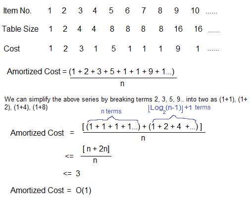

Analysis of Algorithms
Asymptotic Analysis
Given two algoithms for a task, how do we find out which one is better?
One native way of soing this is - implwmwnt both the algorithms and run the two programs on your computer for different inputs and see which one takes less time. There are many problems with this approach for analysis of algorithms.
- It might be possible that for some inputs, first algorithm performs better than the second. And for some inputs second performs better.
- It might also be possible that for some inputs, first algorithm perform better on one machine and the second works better on other machine for some other inputs.
Asymptotic Analysis is the big idea that handles above issues in analyzing algorithm in terms of input size(we don't measure the ectual running time). We calculate, how does the time (or space) taken by an algorithm increases with the input size.
References:
MIT's Video lecture 1 on Introduction to Algorithms.
Worst, Average and Bast Cases
Worst Case Analysis(Usually Done)
In the worst case analysis, we calculate upper bound on running time of an algorithm. We must know the case that causes maximum number of operations to be executed.
Average Case Analysis(Sometimes done)
In average case analysis, we take all possible inputs and calculate computing time for all of the inputs. Sum all the calculated values and devide the sum by total number of inputs. We must know (or predict) distribution of cases.
Best Case Analysis(Bogus)
In the best case analysis, we calculate lower bound on running time of an algorithm. We must know the case that causes minimum number of operations to be executed.
Most of the times, we do worst case analysis to analyze algorithms. In the worse analysis, we guarantee an upper bound on the running time of an algorithm which is good information.
The average case analysis is not easy to do in most of the practical cases and it is rarely done. In the average case analysis, we must know (or predict) the mathematical distribution of all possible inputs.
The Best Case analysis is bogus. Guaranteeing a lower bound on an algorithm doesn't provide any information as in the worse case, an algorithm may take years to run.
Asymptotic Notations
The main idea of asymptotic analysis is to have a measure of afficiency of algotithms that doesn't depend on machine specific constants, and doesn't require algorithms to be implemented and time taken by progrms to be compared. Asymptotic notations are mathematical tools to represent time complexity of algorihms for asymptotic analysis. 3 asymptotic notations are mostly used to represent time complexity of algorithms.
Θ Notation: The theta notation bounds a functions from above and below so it defines exact asymprotic behavior. A simple way to get Theta notation of an expression is to drop low order terms and ignore leading constants. For a given function g(n), we denote Θ(g(n)) is following set of functions.
Θ(g(n)) = {f(n): there exist positive constants c1, c2 and n0 such
that 0 <= c1*g(n) <= f(n) <= c2*g(n) for all n >= n0}

Big O Notation: The Big O notation defines an upper bound of an algorithm, it bounds a function only from above. The Bid O notation is useful when we only have upper bound on time complexity of an algorithm. Many times we easily find an upper bound by simply looking at the algorithm.
O(g(n)) = { f(n): there exist positive constants c and
n0 such that 0 <= f(n) <= c*g(n) for
all n >= n0}
 Ω Notation: Just as Big O notation provides an asymptotic upper bound on a function, Ω notation provides an asymptotic lower bound.
Ω Notation can be useful when we have lower bound on time complexity of an algorithm.
Ω Notation: Just as Big O notation provides an asymptotic upper bound on a function, Ω notation provides an asymptotic lower bound.
Ω Notation can be useful when we have lower bound on time complexity of an algorithm.
For a given function g(n), we denote by Ω(g(n)) the set of functions.
Ω (g(n)) = {f(n): there exist positive constants c and
n0 such that 0 <= c*g(n) <= f(n) for
all n >= n0}.

Important Links:
- There are two more notations called little o and little omega.
- Analysis of Algorithm| Set 4 (Analysis of Loops)
- Recent Aritcles on analysis of algorithm.
Little o and little omega notations
The main idea of asymptotic analysis is to have a measure of efficiency of algorithms that doesn't depend on machine specific constants, mainly because this analysis doesn't require algorithms to be implemeneted nad time taken by programs to be compared.
Little o asymptotic notation
Definition: Let f(n) and g(n) be functions that map positive integers to positive real numbers. we say that f(n) is o(g(n)) (of f(n) E o(g(n))) if for any real constant c>0, there exists an integer constant n0>= 1 such that 0 <= f(n) < c*g(n).
In mathematical relation, f(n) = o(g(n)) means lim f(n)/g(n) = 0
Little omega asymptotic notation
Definition: Let f(n) and g(n) ne functions that map positive integers to positive real numbers. We say that f(n) is ω(g(n)) (or f(n) ∈ ω(g(n))) if for any real constant c > 0, there exists an integer constant n0 >= 1 such that f(n) > c*g(n) >= 0 for every integer n >= n0
f(n) has a higher growth rate than g(n) so main difference between Big Omega(Ω) and little omega (ω) lies in their definitions. In the case of Big Omega f(n)=Ω(g(n)) and the bound is 0<=cg(n)<=f(n), but in case of little omega, it is true for 0 <= c*g(n) < f(n).
We use ω notation to denote a lower bound that is not asymptotically tight. and, f(n) ∈ ω(g(n)) if and only if g(n) ∈ ο((f(n))
In mathematical relation, if f(n) ∈ ω(g(n)) then lim f(n)/g(n) = ∞

Lower and Upper Bound Theory
The Lower and Upper Bound Theory provides a way to find the lowest complexity algorithm to solve a problem. What actually Lower and Upper bounds are.
- Lower Bound - Let L(n) be the running time of an algorithm A(n), then g(n) is the Lower Bound of A if there exist two constants C and N such that L(n) <= C*g(n) for n > N. Lower bound of an algorithm is shown by the asymtotic notation called Big Omega
- Upper Bound - Let U(n) be the running time of an algorithm A, then g(n) is the Upper Bound of A if there exist two constants C and N such that U(n) >= C*g(n) for n > N. Upper bound of an algorithm is shown by the asymtotic notation called Big Oh(O)
1. Lower Bound Theory
According to the lower bound theory, for a lower bound L(n) of an algorithm, it is not possible to have any other algorithm (for a common problem) whose time complexity is less than L(n) for random input. Also every algorithm must take at least L(n) time in worst case. Note that L(n) here is the minimum of all the possible algorithm, of maximum complexity.
Note that our main motive is to get an optimal algorithm, which is the one having its Upper Bound Same as its Lower Bound (U(n)=L(n)).
Trivial Lower Bound - It is the easiest method to find the lower bound. The Lower bounds which can be easily observed on the basis of the number of input taken and the number of output produces are called trivial Lower Bound.
Multiplication of nxn matrix, where,
Input: For 2 matrix we will have 2n2 inputs
Output: 1 matrix of order n x n, i.e., n2 outputs
Computational Model- The method is for all those alforithms that are comparison based. For example in sorting we have to compare the elements of the list among themselces and then sort them accordingly. Similar is the case with searching and thus we can implement the same in this case.
Analysis of Loops
O(1): Time complexity of a function (or set of statements) is considered as O(1) if it doesn't contain loop, recursion and call to any other non-constant time function.
// Here c is a constant
for (int i = 1; i <= c; i++) {
// some O(1) expressions
}
O(n): Time Complexity of a loop is considered as O(n) if the loop variables is incremented/decremented by a constant amount.
// Here c is a positive integer constant
for (int i = 1; i <= n; i += c) {
// some O(1) expressions
}
for (int i = n; i > 0; i -= c) {
// some O(1) expressions
}
O(nc): Time complexity of nested loops is equal to the number of times the innermost statement is executed.
for (int i = 1; i <=n; i += c) {
for (int j = 1; j <=n; j += c) {
// some O(1) expressions
}
}
for (int i = n; i > 0; i -= c) {
for (int j = i+1; j <=n; j += c) {
// some O(1) expressions
}
O(Logn): Time Complexity of a loop is considered as O(Logn) if the loop variables is devidedd / multiplied by a constant amount.
for (int i = 1; i <=n; i *= c) {
// some O(1) expressions
}
for (int i = n; i > 0; i /= c) {
// some O(1) expressions
}
O(LogLogn): Time complexity of a loop is consider as O(LogLogn) f the loop variables is reduced / increased exponentially by a constant amount.
// Here c is a constant greater than 1
for (int i = 2; i <=n; i = pow(i, c)) {
// some O(1) expressions
}
//Here fun is sqrt or cuberoot or any other constant root
for (int i = n; i > 1; i = fun(i)) {
// some O(1) expressions
}
How to combine time complexities of consecutive loops?
When there are consecutive loops, we calclate time complexity as sum f time complexities of individual loops
for (int i = 1; i <=m; i += c) {
// some O(1) expressions
}
for (int i = 1; i <=n; i += c) {
// some O(1) expressions
}
Time complexity of above code is O(m) + O(n) which is O(m+n)
If m == n, the time complexity becomes O(2n) which is O(n).
Solving Recurrences
Substitution Method: We make a guess for the solution and then we use mathematical induction to prove the guess is correct or incorrect.
For example consider the recurrence T(n) = 2T(n/2) + n
We guess the solution as T(n) = O(nLogn). Now we use induction
to prove our guess.
We need to prove that T(n) <= cnLogn. We can assume that it is true
for values smaller than n.
T(n) = 2T(n/2) + n
<= cn/2Log(n/2) + n
= cnLogn - cnLog2 + n
= cnLogn - cn + n
<= cnLogn
Recurrence Tree Method: In this method, we draw a recurrence tree and calculate the time taken by everu level of tree. Finnaly, we sum the work done at all levels. To draw the recurrence tree, we start from the given recurrence and keep drawing till we find pattern among levels. The pattern is typically a arithmetic or geometric series.
For example consider the recurrence relation
T(n) = T(n/4) + T(n/2) + cn2
cn2
/ \
T(n/4) T(n/2)
If we further break down the expression T(n/4) and T(n/2),
we get following recursion tree.
cn2
/ \
c(n2)/16 c(n2)/4
/ \ / \
T(n/16) T(n/8) T(n/8) T(n/4)
Breaking down further gives us following
cn2
/ \
c(n2)/16 c(n2)/4
/ \ / \
c(n2)/256 c(n2)/64 c(n2)/64 c(n2)/16
/ \ / \ / \ / \
To know the value of T(n), we need to calculate sum of tree
nodes level by level. If we sum the above tree level by level,
we get the following series
T(n) = c(n^2 + 5(n^2)/16 + 25(n^2)/256) + ....
The above series is geometrical progression with ratio 5/16.
To get an upper bound, we can sum the infinite series.
We get the sum as (n2)/(1 - 5/16) which is O(n2)
Master Method:
Master Method is a direct way to get the solution. The maser method works only for following type of recurrences or for recurrences that can be transformed to follwoing type.
T(n) = aT(n/b) + f(n) where a >= 1 and b > 1
There are following three cases:
- If f(n) = Θ(nc) where c < c < Logba then T(b) = Θ(nLogba)
- If f(n) = Θ(nc) where c = Logba then T(n) = Θ(ncLog n)
- If f(n) = Θ(nc) where c > Logba then T(n) = Θ(f(n))
How does this work?
Master methd is mainly derived from recurrence tree method. If we draw recurrence tree of T(n) = aT(n/b) + f(n), we can see that the work done at root is f(n) and work done at all leaves is Θ(nc) where c is Logba. And the height of recurrence tree is Logbn.

In recurrence tree method, we calculate total work done. If the work done at leaves is polynomially, then leaves are the dominant part, and our result becomes the work done leaves (Case 1). If work done at leaves and root is asymptotically same, then our result becomes height multiplied by work done at any level (Case 2). If work done at root is asymptotically more, then our result becomes work done at root(Case 3).
Amortized Analysis Introduction
Amortized Analysis is used for algorithms where an occasional operation is very slow, but most of the other operations are faster. In Amortized Analysis, we analyze a sequence of oprations and guarantee a worst case average time which is lower than the worst case time of a particular expensive operation.
The solution to this trade off problem is to use Dynamic Table (or Arrays). The idea is to increase size of table whenever it becomes full. Following are the steps to follow when table becomes full.
- Allocate memory for a larger table of size.
- Copy the contents of old table to new value.
- Free the old table.
If the table has space available, we simply insert new item in available space.

What is the time complexity of n insertions using the above scheme?
If use simple analysis, the worst case cost of an insertion is O(n). Therefore, worst case cost of n inserts is n * O(n2). This analysis gives an upper bound, nit not a tight upper bound for n insertions as all insertions don't take Θ(n) time.

Folowing are few important notes.
- Amoritized cost of a sequence of operations can be seen as expenses of a salaried person. The average monthly expense of the person is less than or equal to the salary, but the person can spend more money in a particular month by buying a car or something. In other months, he or she saves money for the expensive month.
- The above Amoritized Analysis done for Dynamic Array example is called Aggregate Method. We will be discussing the other two methods in separate posts.
- The amoritized analysis doesn't involve probability. There is also another different notion of average case running time where algorithms use randomization to make them faster and expected running time is faster than worst case running time. These algorithms are analyzed using Randomized Analysis.
Sources::
Berkeley Lecture 35: Amoritized Analysis. MIT Lecture 13: Amoritized Algorithms, Table Doubling, Potential Method amoritzed
What does 'Space Complexity' mean?
Space Complexity:
The term Space Complexity is misused for Auxiliary Space at many places. Following are the correct definitions of Auxiliary Space and Space Complexity.
Auxiliary Space is the extra space or temporary space used by an alogorithm.
Space Complexity of an algorithm is total space taken by the algorithm with respect to the input size. Space complexity includes both Auxiliary space and space used by input.
For example, if we want to compare standard sorting algorithms on the basis of space, then Auxiliary Space would be a better criteria than Space Complexity. Merge Sort uses O(n) auxiliary space, Insertion sort and Heap Sort use O(1) auxiliary space. Space complexity of all these sorting algorithms is O(n) though.
Pseudo-polynomial Algorithms
What is Pseudo-polynomial?
An algorithm whose worst case time complexity depends on numeric value of input (not number of inputs) is called Pseudo-polynomial algorithm.
On the other hand, an algorithm whose time complexity is only based on number of elements in array (not value) is considered as polynomial time algorithm.
Pseudo-polynomial and NP-Completeness
Some NP-Complete problems have Pseudo Polynomial time solutions. For example, Dynamic Programming Solutions of 0-1 Knapsack, Subset-Sum and Partition problems are Pseudo-Polynomial. NP complete problems that can be solved using a pseudo-polynomial time algorithms are called weakly NP-complete.
Reference:
Polynomial Time Approximation Scheme
It is a very well know fact that there is no known polynomial time solution for NP Complete problems and these problems occur a lot in real world. So there must be a way to handle them. We have seen algotithms to these problems which are approximate.
Polynomial Time Approximation Scheme(PTAS) is a type of approximate algorithms that provide user to control over accuracy which is a desirable feature. These algorithms take an additional parameter e > 0 and provide a solution that is (1 + e) approximate for minimization and (1 - e) for maximization.
In PTAS algorithms, the exponent of the polynomial can increase dramatically as e reduces.
To be continued.
Get more information at here.